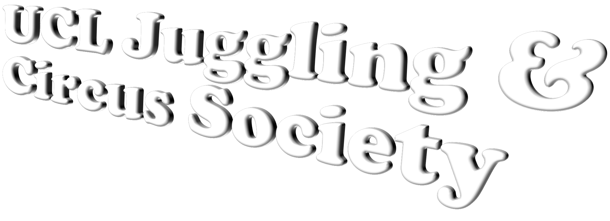

An unserious candidate joins an unserious society:
Juggling balls, clubs, and responsibilities since 2002.
News
- 14/11/2022: We are holding our Term 1 By-Election Hustings for Master of Balls this Friday 18th at 6pm in the South Quad Teaching Block 102 in the form of a PowerPoint Night social!! Come watch even if you are not presenting. We are making all candidates and committee members do a presentation on some random stupid topic and it'll be funny. You can do a presentation as well if you come prepared with one!
- 12/11/2022: After 18 years we have regained access to the website. I am very slowly making my way through the source code to make it look nicer but my HTML/CSS skills are limited to GCSE level. Let me know if you are a computing genius.
- 2021/22: Day change: Monday->Tuesday.
- 2013/14: BALLS! was renamed to Juggling and Circus Society.
- May 2004: More photos added.
- April 2004: Day change: Tuesday->Monday.
- Jan 2004: Juggling may cause your brain to develop (BBC, Nature).
T-Shirts
We're thinking of having T-Shirts. There will be a competition to design the
front. Details to follow.
Update: after 18 years of thinking we've finally got t-shirts. The Union banned the design because it
says 'fuck it we ball'
across the front, but we printed it anyway with our own money. What the hell are they going to do?
Update (14/11): The t-shirts should be arriving TOMORROW!! We will distribute them at our regular Tuesday session if they arrive on time.
Otherwise we will do it the week after.